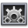

Snimanje nastave
OpenBoard omogućuje snimanja videa nastave.
Vrlo korisno za dijeljenje dodatnih vježbi ili informacija putem videa ili za snimanje nastave za učenike koji nisu prisutni.
 U modusu ploče se alatne trake i palete neće vidjeti u videu! Isto vrijedi i za web modus, gdje će se na snimci vidjeti samo trenutačna kartica.
U modusu ploče se alatne trake i palete neće vidjeti u videu! Isto vrijedi i za web modus, gdje će se na snimci vidjeti samo trenutačna kartica.
Otvori ovaj alat ovako:

U donjem desnom kutu ploče će se pojaviti sljedeće sučelje:

Pritisni crveni gumb za pokretanje snimanja.
Postavke se mogu prilagoditi pritiskom na . Tamo se nalaze postavke za zvuk (odaberi mikrofon ili ništa), postavke za video (razlučivost videa) i opcije za objavljivanje
Nakon što je snimanje gotovo, snimka će se automatski spremiti na radnu površinu računala